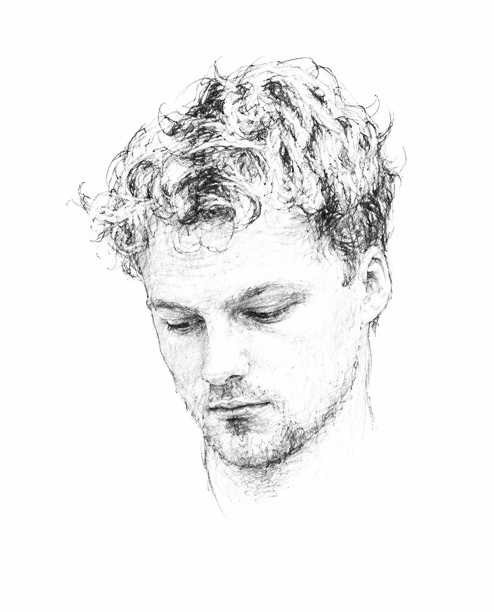

PhD Fellow·Human-Centered Computing·Aarhus University
I'm a first-year PhD Fellow in Human-Centered Computing at Aarhus University, advised by Niklas Elmqvist. Background in cognitive science. Now working across HCI, AI, and design research.
So far my PhD has covered creativity tools, collective knowledge systems, and agentic simulations — different entry points into the same question: what changes when AI becomes part of how people think, create, and collaborate?